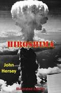
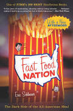
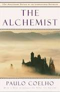
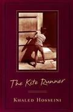
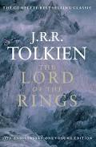
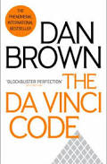

BOOKS CATEGORIES
All books are either non-fiction or fiction. Non-fiction books contain factual information, such as biographies and history books. Fiction books contain a story which was made up by the author.
Non Fiction Books:
Biographies are examples of nonfiction works. Most biographies are nonfiction, but not all nonfiction works are biographies by any means. We say "most" biographies, because a biography of a fictional character is really a fictional book. Journals such as The Diary of Anne Frank is also a journal, but it is a nonfiction journal. Other examples of non-fiction books are "how to" books and travel books.
 Fiction Books:
The most commonly read works are works of fiction. Fiction books are ones that have been made up. Perhaps some of their elements are based on hints of truth, but they have been elaborated, fabricated, and used to embellish into a new story. Some examples of fiction books are The Sun Also Rises, To Kill A Mockingbird, and Their Eyes Were Watching God.
   